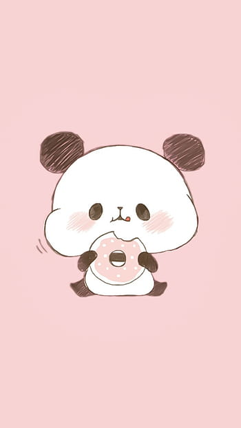

<!DOCTYPE html>
<html lang="en">
    <head>
        <title></title>
        <meta charset="UTF-8">
        <meta name="viewport" content="width=device-width, initial-scale=1">
        <link href="css/style.css" rel="stylesheet">
    </head>
    <body>
    
    </body>
</html>
<html>
    <title>Solitude</title>
    <head> 
    <link rel="stylesheet" type="text/css" href="style.css"> 
    <link rel="preconnect" href="https://fonts.googleapis.com">
<link rel="preconnect" href="https://fonts.gstatic.com" crossorigin>
    <link href="https://fonts.googleapis.com/css2?family=Dancing+Script:wght@700&display=swap" rel="stylesheet">
    </head>
    <body style="background-color:#FFE4E1;">
    <div class="menu">
        <div class="MenuItem"> 
              
        <label for="openNaV" class="openNaV">
            <div class="logo"></div>
        </label>
            <nav>
                    <a href="index.php">Trang Chủ</a>
                    <a href="menu.php">Menu</a>
                    <a>Liên Hệ</a>
                    <a>Đăng Nhập</a>
                    <div class="HoatAnh start-home"></div>
            </nav>    
       
        </div>
    </div>
        <div class="body">
            <div class="GioiThieu">
                <div style="width:70%;float:left"class="GioiThieuT">
                        <h3>Chào Mừng Bạn Đã Đến Với Solitude MoChi </h3>
                        <p>Mochi là một loại bánh truyền thống của Nhật Bản với lớp vỏ bằng bột gạo dẻo thuần khiết là  m từ gạo Mochi. Từ ngàn xưa Mochi đã là món bánh của sự gắn kết gia đình và bè bạn. Ngày nay, mỗi chiếc bánh tượng trưng cho lời cầu chúc may mắn, thịnh vượng và hơn tất cả, là sự sum vầy - Mochi mang đến sự gắn bó và chia sẻ niềm vui.

    Sự tuyệt hảo của Mochi có thể cảm nhận ngay ở miếng đầu tiên. Nhưng bạn khó có thể biết những bí quyết riêng ẩn trong hương vị ngọt ngào quyến rũ ấy. Điều khiến Mochi thơm ngon đặc biệt chính là ở sự khéo léo và chỉnh chu đến từng chi tiết trong quá trình tạo ra chiếc bánh. Chúng tôi tin làm bánh Mochi là một môn nghệ thuật - bắt đầu bằng những nguyên liệu cao cấp.</p>
                <button type="button" onclick="location.href='menu.php';" class="csw-btn-button" >Cùng mình xem qua Menu nào</button>

                <div style="width:30%;float:right;" class="GioiThieuP">
                        
            </div>
                </div>
            </div>
        </div>
        <div class="clear"></div>
        <div class="footer">
            <p>Công Ty TNHH 1TV SOLITUDE MOCHI</p>
            <p>Địa chỉ: 390 Hoàng Văn Thụ, Phường 4, Tân Bình, Thành phố Hồ Chí Minh</p>
        </div>
    </body>
   
</html>